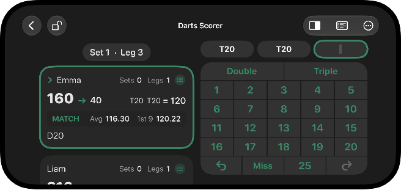
Landscape Orientation
Rotate your iPhone for dedicated landscape layouts across the whole app, with an orientation lock and a numpad side toggle.
The complete darts companion. Every finish from 170 down, a full X01 scorer with match stats, and practice games, on iPhone, iPad and Apple Watch. No ads, ever.
See what's new →

Rotate your iPhone for dedicated landscape layouts across the whole app, with an orientation lock and a numpad side toggle.
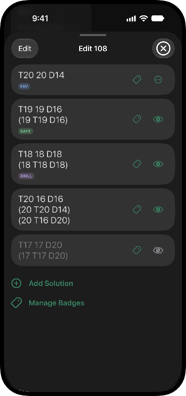
Press and hold any checkout to make it yours: add your own routes, hide the ones you don't use, and drag to reorder. Your changes sync across all your devices with iCloud.
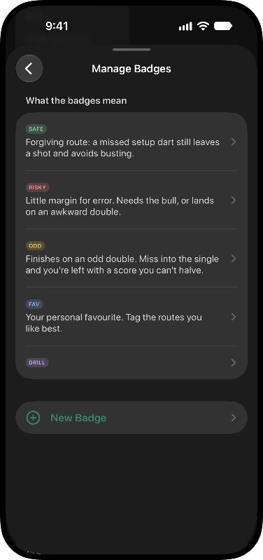
Tag any finish with badges like SAFE, RISKY, and ODD so your best routes stand out at a glance. Use the expert-picked defaults, or create your own and assign as many as you like.
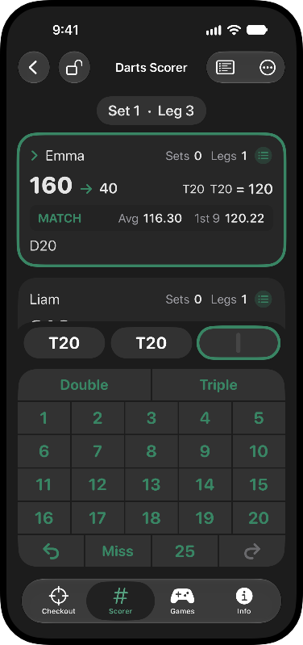
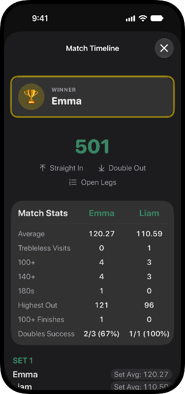
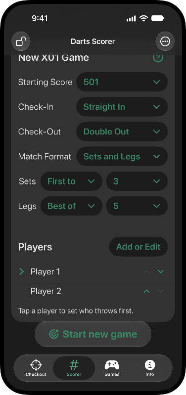
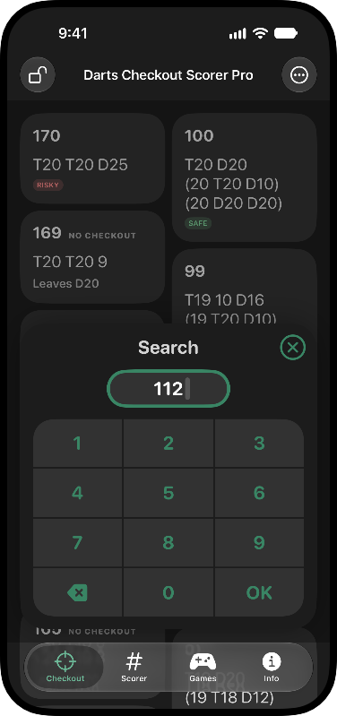
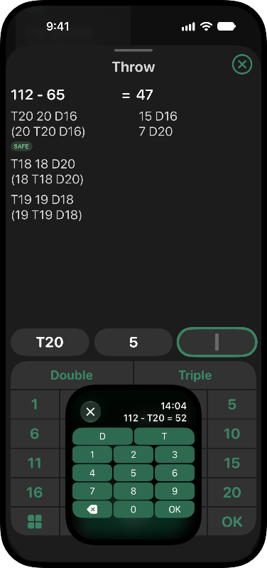
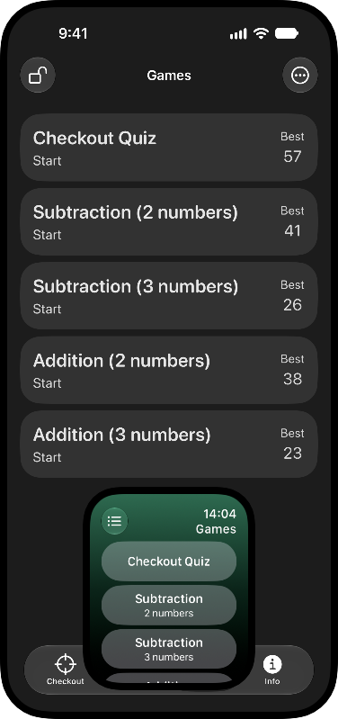
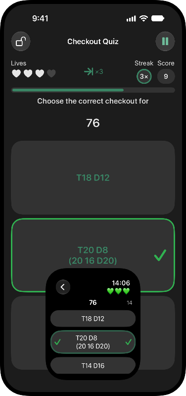
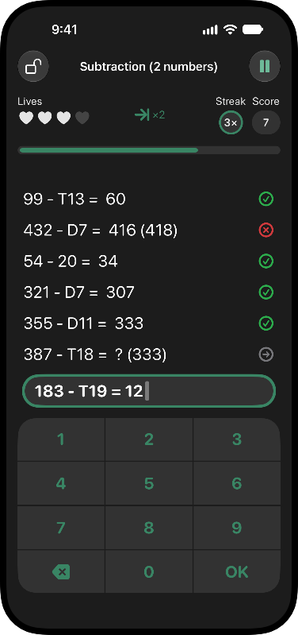
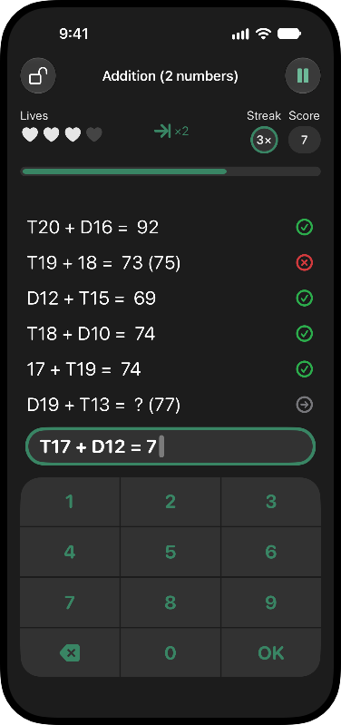
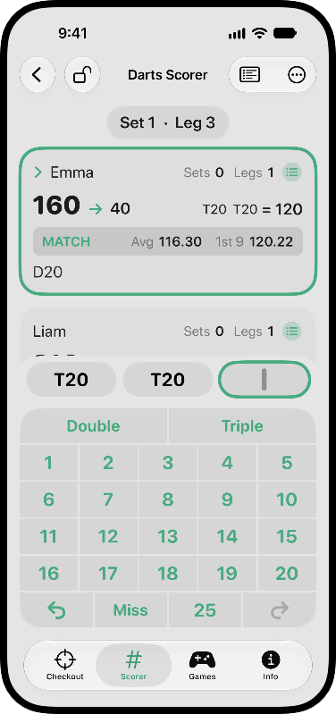
Turn the Digital Crown to your score and see the finish, badges included. Missed a dart? Enter it and get the new route. And the quiz and math games fit in any break between legs.
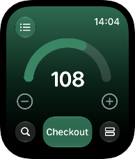
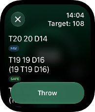
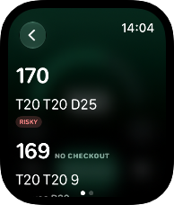
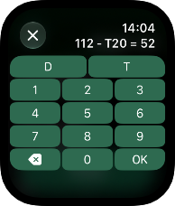
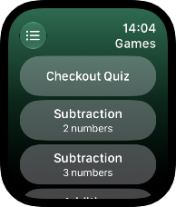
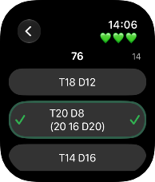
Proven routes with alternatives for when the first dart strays, plus setup shots for the scores you can't finish.
Enter what you actually hit and see your new score and the best way out, instantly.
Up to eight players, 101 to 901, sets and legs, straight, double or master in and out. Every dart is saved, so you can pick a match up later.
Three-dart and first-nine averages, 100+, 140+ and 180 counts, highest out and doubles percentage, live and after the match.
Press and hold any checkout to add your own routes, hide the ones you never use, reorder, and tag them with badges.
Prove you know your finishes. Pick the right route or the right target against the clock and build your streak.
Subtraction and addition drills built from real dart scores, so counting down at the board becomes second nature.
Dedicated landscape layouts on iPhone, an orientation lock, and the keypad on whichever side suits you.
Darts Checkout Pro is a one-time purchase with no ads and an Apple Watch app. Darts Checkout is the free version with ads.
| Feature | Darts Checkout | Pro |
|---|---|---|
| Checkout table, search and throw calculator | ✓ | ✓ |
| X01 scorer with match stats | ✓ | ✓ |
| Custom routes and badges | ✓ | ✓ |
| Checkout quiz and math games | ✓ | ✓ |
| Lives per game | 3 | 4 |
| Apple Watch app | – | ✓ |
| Ads | Removable with a one-time purchase | None |
It comes with Darts Checkout Pro. Open the Watch app on your iPhone, find Darts Checkout Pro under Available Apps and tap Install.
Yes. Routes, hidden rows and badges you set up on your iPhone sync to the watch through your iCloud account.
Yes. They are stored in your own iCloud account and appear on your other devices signed in to the same account. Nobody else, including me, can see them.
Yes. Every dart is saved as you enter it. Open the Scorer tab and pick the match from the In Progress list.
Press and hold it to add the route you prefer, hide the one you don't like, or tag it. And please email me, the default routes get better with every report.
Still stuck?
Write to vinklair.apps@gmail.com